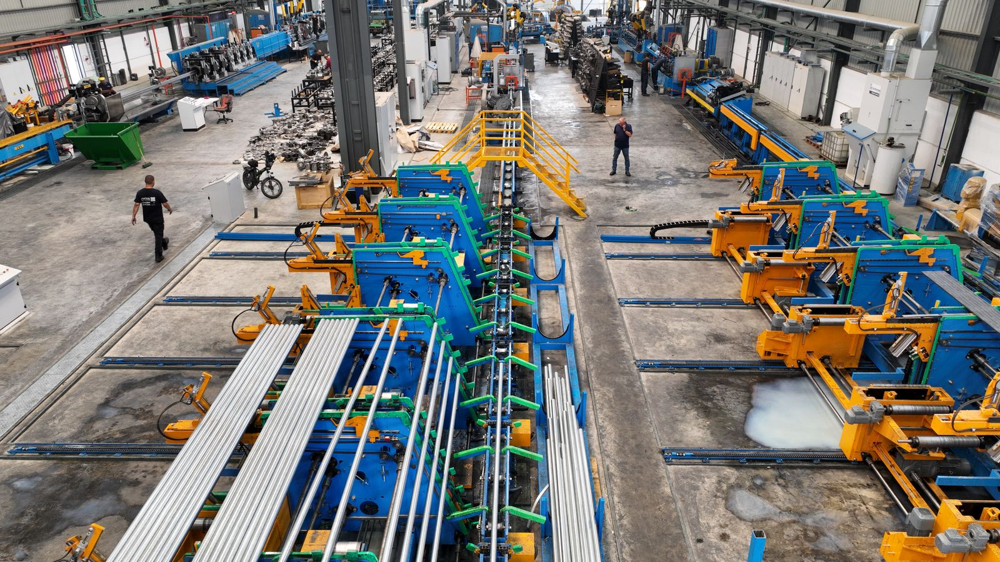

En agosto publicamos qué conviene revisar antes de comprar maquinaria agroindustrial usada. La otra mitad de esa operación recibe mucha menos atención y afecta a más plantas: qué hacer con el equipo que queda cuando se moderniza una línea.
La escena se repite. Una planta cambia su descarozadora, su túnel de frío o su línea de envasado. El equipo antiguo funciona, tiene repuestos y podría operar diez años más en una planta de menor escala. Se desconecta, se corre a un rincón del galpón «hasta ver qué hacemos», y ahí queda. Dos años después se vende como chatarra a una fracción de lo que valía el primer día.

Los cuatro canales, y cuándo conviene cada uno
No hay un canal mejor que los otros: hay uno que calza con el equipo, el plazo y las ganas de gestionar que tenga la planta.
- Venta directa a otra planta. Es la que deja el mejor precio, porque no hay intermediario, y la que más trabajo cuesta: hay que encontrar al comprador, responder consultas técnicas, coordinar una visita y negociar. Funciona bien cuando el equipo es de marca reconocida y la planta tiene contactos en el rubro.
- Corredor o intermediario especializado. Alguien que ya conoce compradores del sector y presenta el equipo con su ficha técnica. Cobra comisión, pero acorta el plazo y filtra las consultas que no van a ninguna parte. Conviene cuando el equipo es específico y el universo de compradores es chico — que es el caso de casi toda la maquinaria agroindustrial.
- Subasta o remate industrial. Convierte el activo en efectivo con fecha cierta. El costo es el precio: en un remate se vende a lo que haya en la sala ese día. Tiene sentido cuando la urgencia manda — cierre de planta, traslado, liquidación— y no cuando se quiere maximizar el retorno.
- Desguace y chatarra. El último recurso, y por lejos el peor negocio: se paga el peso del acero, no la función del equipo. Solo se justifica cuando la máquina realmente no tiene reparación económicamente viable.
Qué determina el precio de verdad
El vendedor tiende a calcular el precio hacia atrás: cuánto costó el equipo, cuántos años tiene, cuánto se deprecia por año. El comprador no razona así. El comprador estima cuánto le costaría dejar ese equipo produciendo en su planta, y descuenta ese número del precio que está dispuesto a pagar.
Lo que mueve la aguja, en orden de peso:
- Disponibilidad de repuestos. Un equipo de marca con representación en Chile vale considerablemente más que uno de origen sin soporte local, aunque sean del mismo año y las mismas horas. Nadie compra una máquina que va a quedar detenida tres meses esperando una pieza.
- Mantención documentada. Un registro de mantenciones —fechas, intervenciones, piezas cambiadas— sube el precio más que cualquier argumento verbal. Sin registro, el comprador asume el peor escenario y descuenta por si acaso.
- Estado del tablero eléctrico y del control. Es donde más barato envejece un equipo: la mecánica aguanta décadas, pero un PLC descontinuado o un variador sin soporte obliga a una actualización cara. Muchos compradores miran esto antes que el desgaste mecánico.
- Aptitud sanitaria. En alimentos no basta con que funcione: las superficies en contacto con el producto tienen que ser del material adecuado y el diseño debe permitir limpieza y sanitización efectivas. Un equipo que no pasaría una auditoría de inocuidad pierde de golpe a todos los compradores que exportan.
- Desmontaje y flete. Se descuenta del precio, siempre. Un equipo que se retira con un camión y dos personas no compite con uno que exige cortar estructura, permisos de transporte especial y una grúa. Conviene tener ese costo estimado antes de negociar, para no descubrirlo cuando el comprador lo pone sobre la mesa.
Los papeles que piden, y que casi nadie guarda
La falta de documentación es la causa más frecuente de una venta que se cae al final, cuando ya estaba todo conversado. Vale la pena reunir esto antes de publicar el equipo:
- Factura de compra original o la documentación de internación si fue importado. Es lo que acredita la propiedad y permite emitir la factura de venta.
- Manual del fabricante y planos eléctricos. Suenan a detalle menor hasta que el comprador tiene que reinstalar el equipo sin ellos.
- Registro de mantenciones, aunque sea incompleto. Un cuaderno con fechas vale más que nada.
- Certificados de materiales en contacto con alimentos, si existen.
- Fotografías reales del equipo operando, no de catálogo. Un video corto de la máquina en marcha resuelve la mitad de las preguntas de un comprador serio.
Si el equipo va a salir del país, se suman los trámites de exportación: es el mismo circuito documental que trabajamos en nuestra gestión de exportaciones agroindustriales.
El error que más valor destruye
No es vender barato. Es desconectar el equipo y dejarlo parado sin conservación.
Una máquina detenida meses en un galpón se oxida donde no se ve, los sellos y empaquetaduras se resecan, los rodamientos se marcan por quedar siempre en la misma posición y la humedad ataca el tablero. Cuando aparece un comprador, ya no se puede encender para mostrarla — y un equipo que no se puede ver funcionando se negocia como si estuviera malo, sin importar que no lo esté.
Lo barato, si la venta no es inmediata: dejarlo bajo techo, cubierto, con las superficies protegidas, y hacerlo girar cada cierto tiempo. Cuesta muy poco y evita el descuento más grande de todos.
Cuánto demora y cómo se estructura
Una venta de maquinaria agroindustrial usada rara vez es rápida: el universo de compradores es reducido y la decisión involucra una inversión. Entre publicar y transferir suelen pasar semanas o meses, no días, y ese plazo baja mucho cuando el equipo está documentado y se puede ver operando.
La operación habitual tiene cuatro pasos: visita técnica del comprador o de alguien de su confianza; acuerdo de precio con el desmontaje y el flete definidos por escrito —quién paga qué—; anticipo que asegura el equipo; y retiro contra pago del saldo. Dejar el desmontaje sin definir es la fuente más frecuente de discusión después de cerrado el trato.
¿Qué significa esto para el sector? — La mirada de Prunavita
Operamos en maquinaria agroindustrial en las dos direcciones, y la asimetría que vemos es clara: hay bastantes plantas medianas buscando capacidad a un costo razonable, y bastante equipo útil detenido en galpones. Lo que falta casi nunca es demanda — es que las dos partes se encuentren con la información suficiente para cerrar.
Por eso, cuando una planta nos consulta por un equipo que quiere vender, lo primero no es el precio: es reunir la ficha técnica, las horas, el estado real y las fotos operando. Con eso el equipo se vende; sin eso se remata. Si su empresa está fuera de Chile y necesita quien verifique el equipo en origen antes de pagar, ese es nuestro servicio de representación comercial.
Y si el equipo que sale de su planta lo hace porque va a certificar una norma de inocuidad, conviene revisar el diseño higiénico del que entra antes de comprarlo — es parte de lo que trabajamos en las asesorías técnicas en calidad e inocuidad.
Análisis y redacción: equipo Prunavita, a partir de la operación propia de compra y venta de equipos. El contexto de mercado y las cifras del sector están en nuestro artículo del 17 de agosto.